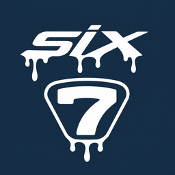
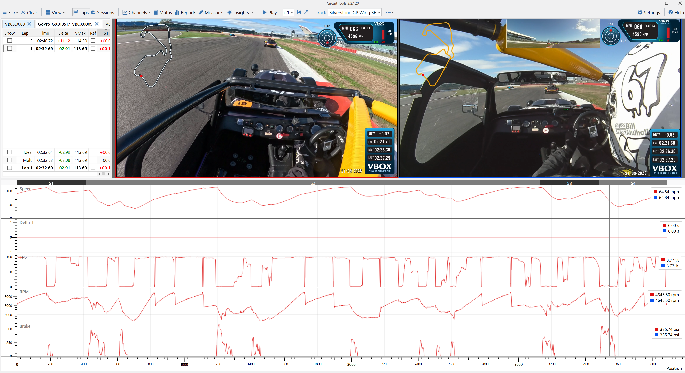

GoPro VBOX SyncFREE · OPEN SOURCE · WINDOWS · BETA
Automatically add your VBOX data to your GoPro videos.
Combine high-quality GoPro footage with synchronised VBOX gauges and track maps. View speed, RPM, throttle and brake pressure on your video, and analyse your runs in Circuit Tools.
Version 1.6.0b11 · Released 30 October 2026 · Windows 10/11 x64
No Python or account needed · More downloads and release notes
Beta limitation: Circuit Tools 3 can reject generated VBO files with an authenticity/checksum error. This remains unresolved; test a short run first. The exported MP4 also plays in ordinary video players.
See the result in Circuit Tools

From download to your first run
- Install and open the app. Video tools download on request (110 MB).
- Choose Help → Try practice recordings to try the included demo.
- Choose your VBOX runs folder. GoPro videos uses it automatically; browse for an SD card or any other folder if your videos are elsewhere. Subfolders are searched by default. No copying is needed.
- Check both paths, then click Scan for matches. Compare Date, Start and Best in file, and tick the videos to include.
- Use Options beside Help for resolution, overlay and sound. Check rotation, then open Frame & preview… to crop and check the output before creating files. Only matching periods are exported, with aligned VBOX sound by default.
The illustrated quick-start guide works offline. All processing stays on your computer.
New in 1.6.0b11
- Read GoPro originals directly from an SD card or another folder. The app remembers a separate GoPro location and your subfolder choice; exports still default to a new folder under your VBOX folder.
- Choose footage before conversion using recording dates, local/UTC start times and Best in file: the fastest complete lap wholly inside that GoPro file. Split laps are excluded from this number. A separate red star marks footage of the whole-run fastest lap, including both files when it spans chapters.
- Options holds resolution, overlay, sound, trimming and subfolder settings. Use Options → Details… for lap and matching information, or Options → What do red stars mean? for marker help.
- Import supported
.VVHSNfull scenes through a compatible VBOX Video Setup installation and its .NET 8 Windows Desktop Runtime. Reusable.gvscenepackages open without the editor. Scene support covers a tested subset; inspect the preview.
Source, documentation and support
MIT licensed. Independent project; not affiliated with GoPro or Racelogic.